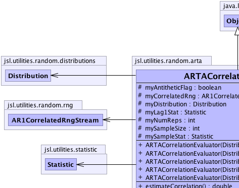
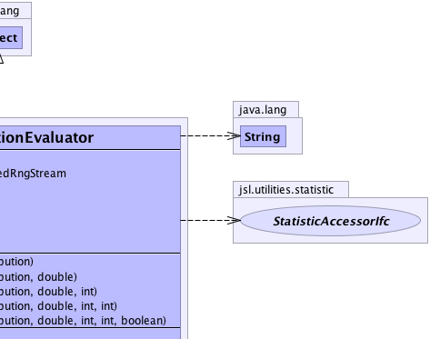
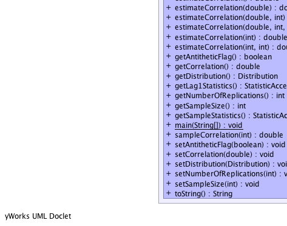
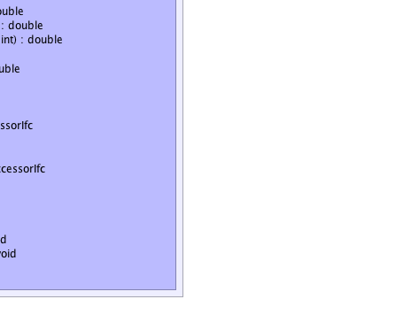

jsl.utilities.random.arta.ARTACorrelationEvaluator
jsl.utilities.random.arta.ARTACorrelationEvaluator
|
||||||||||
| PREV CLASS NEXT CLASS | FRAMES NO FRAMES | |||||||||
| SUMMARY: NESTED | FIELD | CONSTR | METHOD | DETAIL: FIELD | CONSTR | METHOD | |||||||||
java.lang.Object
public class ARTACorrelationEvaluator
|  |  |
|  |  |
| Field Summary | |
|---|---|
protected boolean |
myAntitheticFlag
Whether or not to use antithetic variates in the replications uses to estimate the correlation The default is false |
protected AR1CorrelatedRngStream |
myCorrelatedRng
The correlated random number generator used in the NORTA process |
protected Distribution |
myDistribution
The distribution from which we want the correlated random variates |
protected Statistic |
myLag1Stat
Used to estimate the statistics across replications for the correlation |
protected int |
myNumReps
The number of replications of the provided sample size that are used to estimate the actual correlation The default is 10. |
protected int |
mySampleSize
The sample size used to estimate the actual correlation within one replication. |
protected Statistic |
mySampleStat
Used to estimate the statistics of the indicated sample size |
| Constructor Summary | |
|---|---|
ARTACorrelationEvaluator(Distribution distribution)
Note that the distribution will be set to use a correlated random number generator, with the supplied lag 1 correlation lag 1 correlation = 0.0 sampleSize = 1000 numReps = 1 antitheticFlag = false |
|
ARTACorrelationEvaluator(Distribution distribution,
double lag1)
Note that the distribution will be set to use a correlated random number generator, with the supplied lag 1 correlation sampleSize = 100 numReps = 1 antitheticFlag = false |
|
ARTACorrelationEvaluator(Distribution distribution,
double lag1,
int sampleSize)
Note that the distribution will be set to use a correlated random number generator, with the supplied lag 1 correlation numReps = 1 antitheticFlag = false |
|
ARTACorrelationEvaluator(Distribution distribution,
double lag1,
int sampleSize,
int numReps)
Note that the distribution will be set to use a correlated random number generator, with the supplied lag 1 correlation antitheticFlag = false |
|
ARTACorrelationEvaluator(Distribution distribution,
double lag1,
int sampleSize,
int numReps,
boolean antitheticFlag)
Note that the distribution will be set to use a correlated random number generator, with the supplied lag 1 correlation |
|
| Method Summary | |
|---|---|
double |
estimateCorrelation()
Estimates the correlation based on the provided number of replications of the given sample size |
double |
estimateCorrelation(double hwBound)
Estimates the correlation to the precision of the half-width bound The maximum number of replications is set at 20*getNumberOfReplications() The size of each sample for an individual replication is getSampleSize() |
double |
estimateCorrelation(double hwBound,
int sampleSize)
Estimates the correlation to the precision of the half-width bound The maximum number of replications is set at 20*getNumberOfReplications() |
double |
estimateCorrelation(double hwBound,
int sampleSize,
int numReps)
Estimates the correlation to the precision of the half-width bound or until the specified number of replications has been met |
double |
estimateCorrelation(int numReps)
Estimates the correlation based on the provided number of replications of the given sample size |
double |
estimateCorrelation(int numReps,
int sampleSize)
Estimates the correlation based on the provided number of replications of the given sample size |
boolean |
getAntitheticFlag()
The antithetic flag can be use to turn on antithethic sampling when estimating the correlation with multiple replications |
double |
getCorrelation()
This is the correlation set within the NORTA process |
Distribution |
getDistribution()
|
StatisticAccessorIfc |
getLag1Statistics()
After the correlation has been estimated, this method can be used to get the statistics across the replications on the lag 1 correlation |
int |
getNumberOfReplications()
The number of replications of the provided sample size used to estimate the actual correlation |
int |
getSampleSize()
This is the sample size used within each replication to estimate the actual correlation |
StatisticAccessorIfc |
getSampleStatistics()
After an individual sample for a replication has been generated this method can provide the statistics on the sample |
static void |
main(java.lang.String[] args)
|
double |
sampleCorrelation(int sampleSize)
Returns an estimate of the correlation based on a sample of the provided size |
void |
setAntitheticFlag(boolean antitheticFlag)
The antithetic flag can be use to turn on antithethic sampling when estimating the correlation with multiple replications. |
void |
setCorrelation(double lag1)
This is the correlation that will be used within the NORTA process This is not the desired correlation or the actual resulting correlation |
void |
setDistribution(Distribution distribution)
|
void |
setNumberOfReplications(int numReps)
The number of replications of the provided sample size used to estimate the actual correlation |
void |
setSampleSize(int sampleSize)
|
java.lang.String |
toString()
Returns a String representation |
| Methods inherited from class java.lang.Object |
|---|
clone, equals, finalize, getClass, hashCode, notify, notifyAll, wait, wait, wait |
| Field Detail |
|---|
protected AR1CorrelatedRngStream myCorrelatedRng
protected Distribution myDistribution
protected int mySampleSize
protected int myNumReps
protected boolean myAntitheticFlag
protected Statistic mySampleStat
protected Statistic myLag1Stat
| Constructor Detail |
|---|
public ARTACorrelationEvaluator(Distribution distribution)
distribution -
public ARTACorrelationEvaluator(Distribution distribution,
double lag1)
distribution - lag1 -
public ARTACorrelationEvaluator(Distribution distribution,
double lag1,
int sampleSize)
distribution - lag1 - sampleSize -
public ARTACorrelationEvaluator(Distribution distribution,
double lag1,
int sampleSize,
int numReps)
distribution - lag1 - sampleSize - numReps -
public ARTACorrelationEvaluator(Distribution distribution,
double lag1,
int sampleSize,
int numReps,
boolean antitheticFlag)
distribution - lag1 - sampleSize - numReps - antitheticFlag - | Method Detail |
|---|
public final Distribution getDistribution()
public final void setDistribution(Distribution distribution)
distribution - the distribution to setpublic final double getCorrelation()
public final void setCorrelation(double lag1)
lag1 - the lag 1 correlation to setpublic final int getSampleSize()
public final void setSampleSize(int sampleSize)
sampleSize - the sample size to set, must be > 2public final int getNumberOfReplications()
public final void setNumberOfReplications(int numReps)
numReps - the number of replicationspublic final boolean getAntitheticFlag()
public final void setAntitheticFlag(boolean antitheticFlag)
antitheticFlag - the flag to setpublic final double estimateCorrelation()
public final double estimateCorrelation(int numReps)
numReps - must be >=1
public final double estimateCorrelation(int numReps,
int sampleSize)
numReps - must be >=1sampleSize - must be > 3
public final double estimateCorrelation(double hwBound)
hwBound -
public final double estimateCorrelation(double hwBound,
int sampleSize)
hwBound - sampleSize - The size of each sample for an individual replication
public final double estimateCorrelation(double hwBound,
int sampleSize,
int numReps)
hwBound - sampleSize - The size of each sample for an individual replicationnumReps - The maximum number of replications
public final StatisticAccessorIfc getLag1Statistics()
public final double sampleCorrelation(int sampleSize)
sampleSize - must be > 2
public final StatisticAccessorIfc getSampleStatistics()
public java.lang.String toString()
toString in class java.lang.Objectpublic static void main(java.lang.String[] args)
args -
|
||||||||||
| PREV CLASS NEXT CLASS | FRAMES NO FRAMES | |||||||||
| SUMMARY: NESTED | FIELD | CONSTR | METHOD | DETAIL: FIELD | CONSTR | METHOD | |||||||||